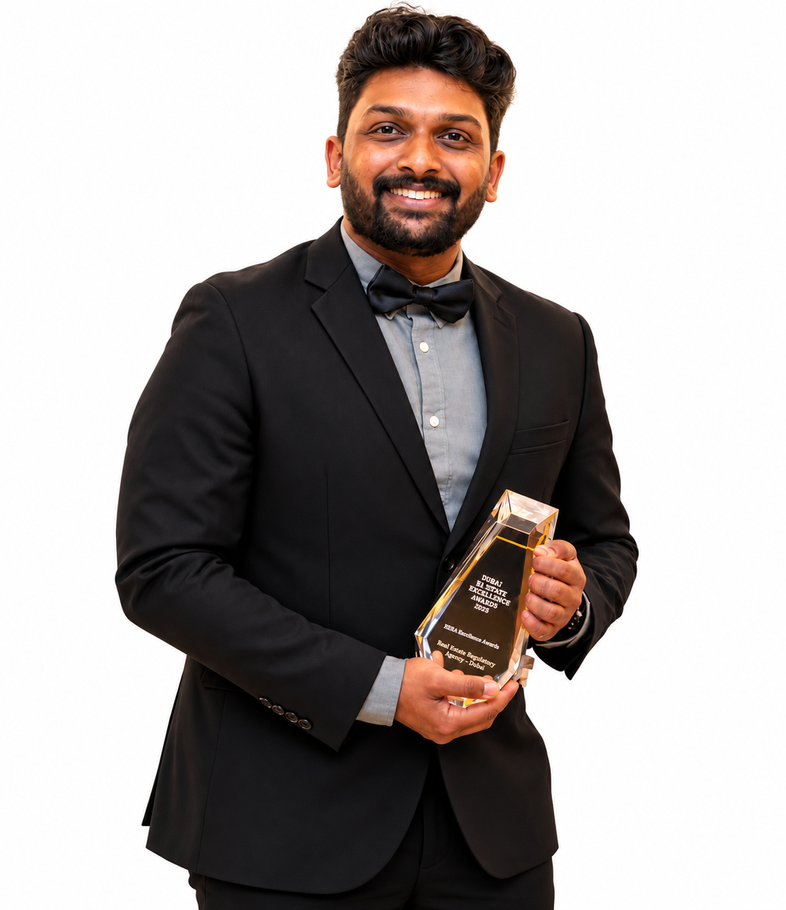
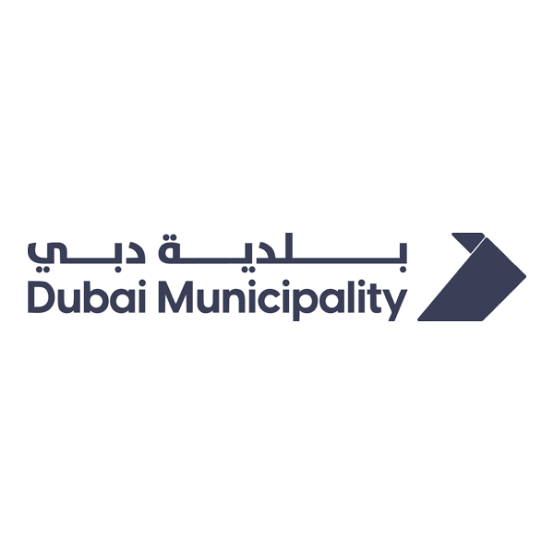
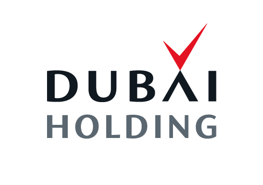
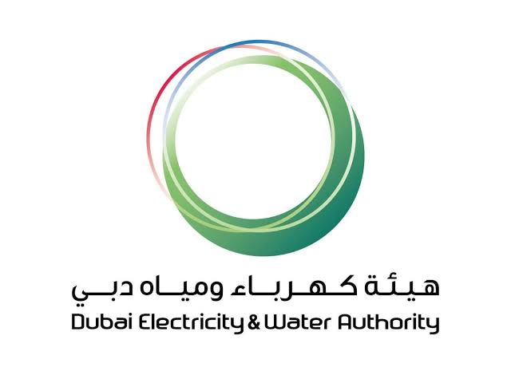
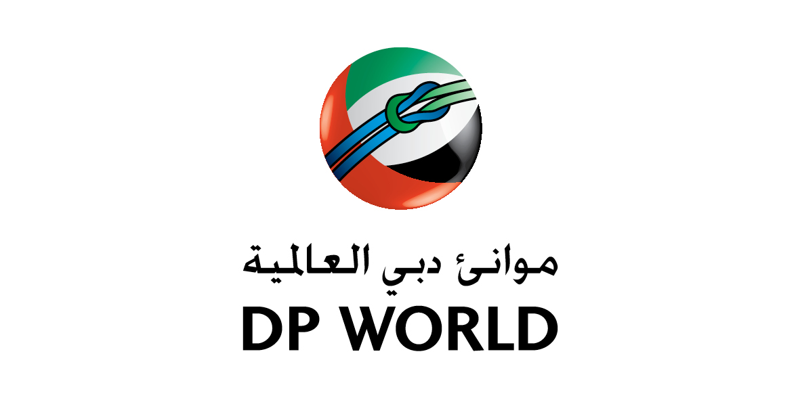
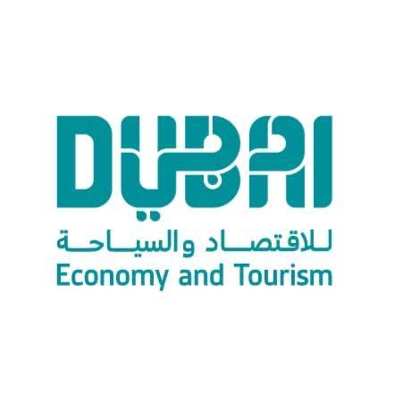
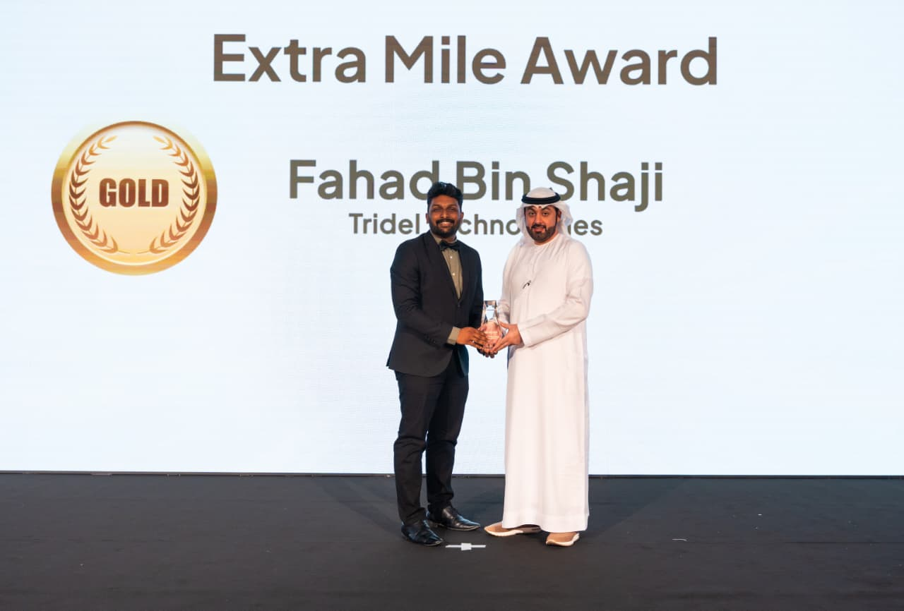
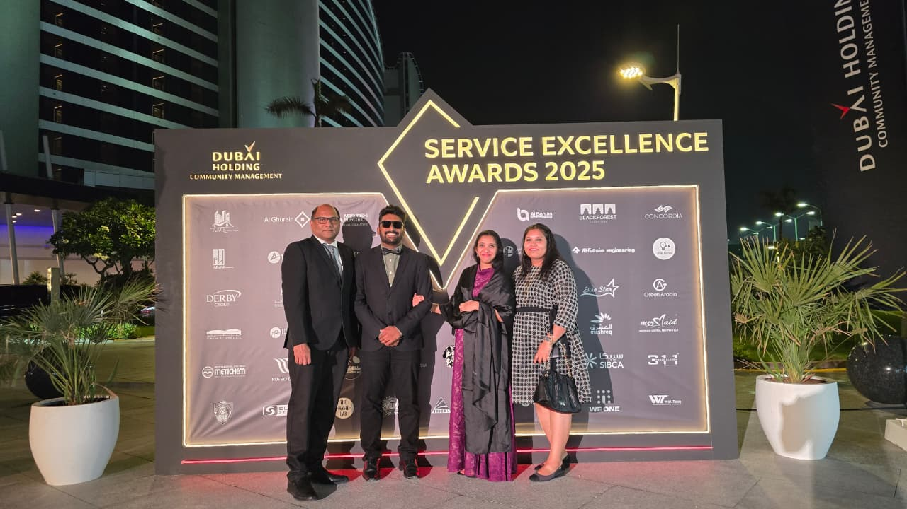

Ocean & marine monitoring
Seawater quality measurements, sediment evaluation, ecological sampling, and marine data buoy maintenance to understand changing environmental conditions.
I’m Fahad Bin Shaji, an Environmental Engineer focused on ocean and beach management, marine monitoring, ecological assessment, and practical environmental solutions across the UAE.

With more than seven years of professional experience, I work across environmental monitoring and assessment, with a particular focus on marine ecosystems and coastal environments.
My work combines field investigations, water and sediment sampling, ecological surveys, environmental data analysis, and clear technical reporting. I also coordinate field teams and liaise with clients to respond to site issues while supporting regulatory compliance and responsible environmental management.
Ocean and beach management are at the centre of my environmental work across the UAE.
Seawater quality measurements, sediment evaluation, ecological sampling, and marine data buoy maintenance to understand changing environmental conditions.
Routine beach monitoring, environmental issue identification, incident investigation, advisory reporting, and coordination to address urgent site concerns.
Field surveys and sample collection, including benthic assessments, phytoplankton analysis, BRUV deployments, and DDV operations.
Technical monitoring and practical coordination for complex environmental settings.
In-situ seawater quality monitoring, beach inspections, seabed sediment evaluation, and marine data buoy maintenance.
Ecological surveys and sampling to help characterise marine habitats and assess environmental conditions.
Multi-probe measurements, laboratory coordination, phytoplankton assessment, and structured technical reporting.
Field-team coordination, incident reporting, client liaison, wildlife relocation support, and EHS inspections.
Selected projects and client programmes referenced in my professional experience.
Marine and beach monitoring, seawater quality assessments, ecological surveys, incident investigation, and environmental reporting.
Environmental monitoring and assessment activities supporting a marine habitat and conservation initiative.
Installation, configuration, and maintenance of odor monitoring stations, including data reporting and presentations.
Environmental monitoring and water quality management activities across Al Qudra and Hatta lakes.
Water and sediment sampling, phytoplankton, zooplankton and macro-benthos collection for ecological assessment at discharge locations.
Project summaries are high-level descriptions based on my professional experience. Detailed reports and client-confidential material are not published here.
Client and stakeholder logos are paired with the relevant programmes listed in my experience.

Odor monitoring network and water quality management across Al Qudra and Hatta lakes.
eNOSE · LAKE WATER QUALITY
Palm Jumeirah marine environmental projects, including marine and beach monitoring.
PALM JUMEIRAH · MARINE ENVIRONMENT
Ecological assessment at seawater discharge points in Jebel Ali, including water and sediment sampling.
JEBEL ALI · ECOLOGICAL ASSESSMENT
Odor monitoring network programme, including station maintenance and data reporting.
eNOSE · MONITORING NETWORK
Dubai Reef initiative, supporting marine habitat and conservation monitoring.
DUBAI REEF · MARINE CONSERVATIONLogos are displayed to identify organisations associated with the referenced projects. Their inclusion does not imply endorsement.
Lead and support environmental monitoring activities, ecological studies, water and sediment sampling, beach inspections, technical reporting, field-team coordination, and client liaison.
Conducted property audits and site inspections, documented EHS risks, coordinated with stakeholders and contractors, and supported environmental and safety compliance measures.
Vinayaka Mission University, India · 2013 - 2017
Occupational Health and Safety · 2021
Selected awards and recognitions listed in my professional resume.


Tridel Technologies Project Contracting L.L.C
OYO Hotels and Homes Pvt. Ltd.
Dubai Holding Service Excellence Awards
Dubai Holding Service Excellence Awards
SERVICE EXCELLENCEFM Middle East Awards
For environmental projects, professional opportunities, or collaboration, feel free to reach out.